xp
Piloto para aprovação
Do Mundo
à Mesa
Jantar reservado · 5 convidados
03 de dezembro · Joinville/SC
Série de 15 pílulas enviadas pelo WhatsApp de 13/11 a 04/12. A narrativa vai do mundo ao Brasil, do Brasil à família, e da família à mesa.
Cenários
Wealth Planning
Ecossistema
A mesa
Anfitriões: Luiz Calfat e Glaucio Gonçalves
Santa Mistura · 20h
Arquitetura de datas
15 toques até a mesa
Cenários: 18 e 20/11Wealth: 23 a 26/11Pessoas: 27/11 a 01/12
13/11sexSave the date · 9h
16/11segA agenda · 8h30
18/11quaGeopolítica & Macro · 8h30
20/11sexBrasil · 8h30
23/11segSucessão · 8h30
24/11terTributação · 8h30
25/11quaOffshore · 8h30
26/11quiHoldings · 8h30
27/11sexQuem estará à mesa · 9h
30/11segEconomista: André Torres · 8h30
30/11segEcossistema XP 360° · 12h30
01/12terAdvogada: Isabella Magalhães · 8h30
02/12quaVéspera · 10h
03/12quiÉ hoje · 10h
04/12sexObrigado · 10h
Save the date
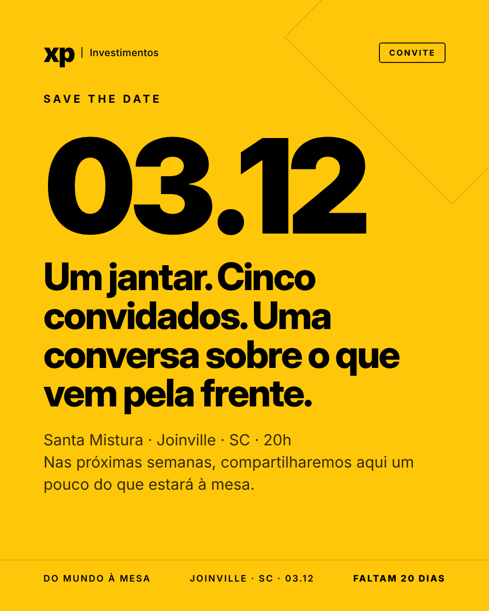
Texto do WhatsAppOlá, tudo bem? O Glaucio Gonçalves e eu estamos organizando um jantar reservado em Joinville no dia 3 de dezembro, para apenas cinco convidados. Será uma conversa franca sobre os cenários que vêm pela frente e o que eles significam para o patrimônio da sua família. Será um prazer contar com a sua presença. Nas próximas semanas, compartilho por aqui algumas pílulas dos temas da noite. Posso reservar o seu lugar?
16/11 · seg · 8h30
02 / 15
A agenda
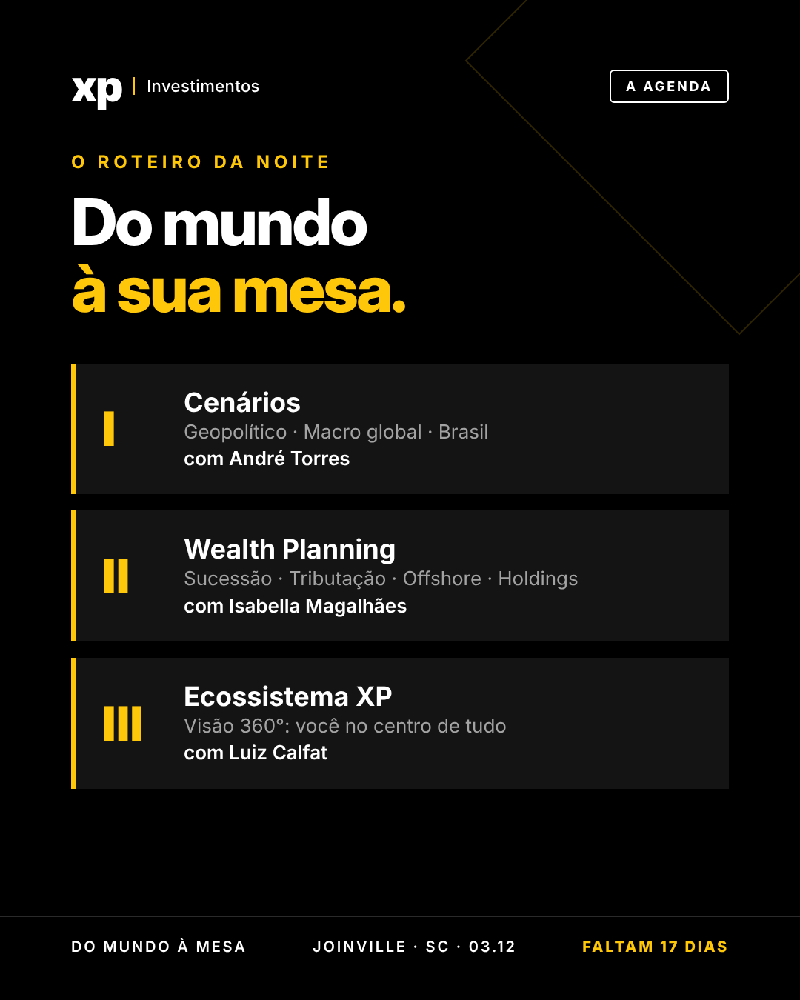
Texto do WhatsAppA noite terá três blocos: cenários (geopolítico, macro global e Brasil), com o economista André Torres; wealth planning (sucessão, tributação, offshore e holdings), com a advogada Isabella Magalhães; e o ecossistema XP, com uma visão 360° em que você está no centro de tudo. Do mundo à mesa.
18/11 · qua · 8h30
03 / 15
Geopolítica & Macro
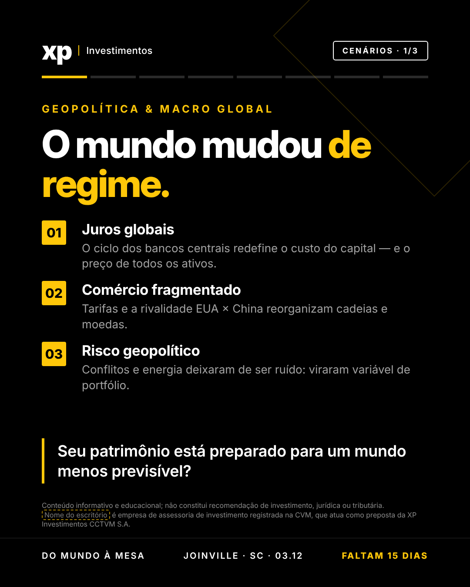
Texto do WhatsAppPrimeira pílula: o mundo mudou de regime. Juros globais, tarifas e conflitos deixaram de ser notícia e passaram a ser variáveis de portfólio. No dia 3, vamos discutir o que isso significa na prática.
20/11 · sex · 8h30
04 / 15
Brasil
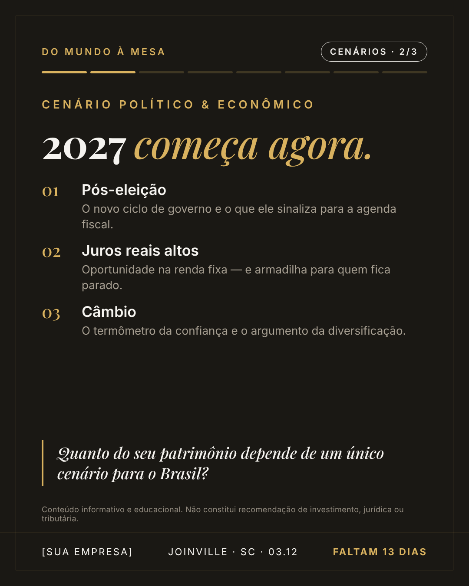
Texto do WhatsAppCom a eleição para trás, 2027 começa agora. Fiscal, juros reais e câmbio: onde estão as oportunidades e onde estão as armadilhas. Deixo a pergunta da imagem para reflexão.
23/11 · seg · 8h30
05 / 15
Sucessão
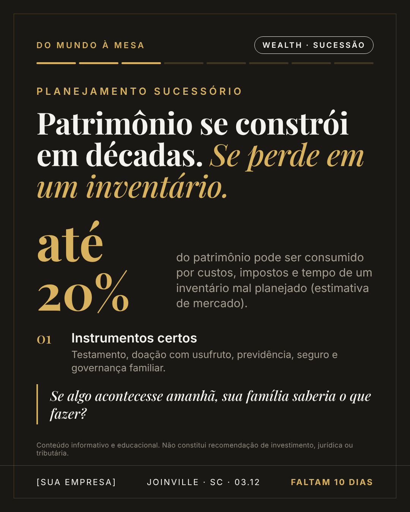
Texto do WhatsAppTalvez a pílula mais importante da série. Um patrimônio construído ao longo de décadas pode perder parte relevante do seu valor em um inventário. Isso se resolve em vida, com tranquilidade e com os instrumentos certos.
24/11 · ter · 8h30
06 / 15
Tributação
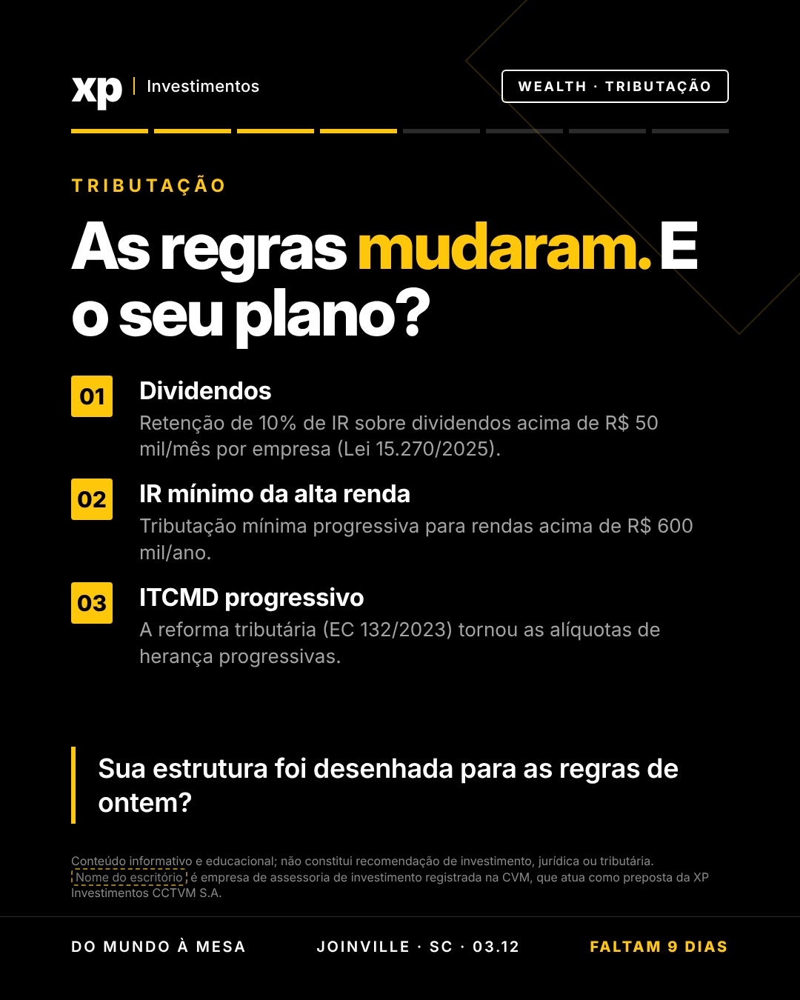
Texto do WhatsAppAs regras mudaram em 2026: retenção sobre dividendos, IR mínimo para alta renda e ITCMD progressivo. Muitas estruturas que faziam sentido até 2025 precisam ser revistas.
25/11 · qua · 8h30
07 / 15
Offshore
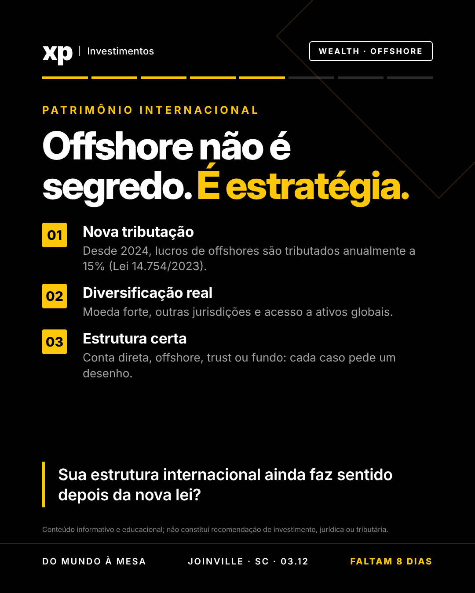
Texto do WhatsAppOffshore não é segredo, é estratégia. Mas a lei de 2023 mudou a conta, e vale revisar se a sua estrutura internacional ainda é a mais eficiente.
26/11 · qui · 8h30
08 / 15
Holdings
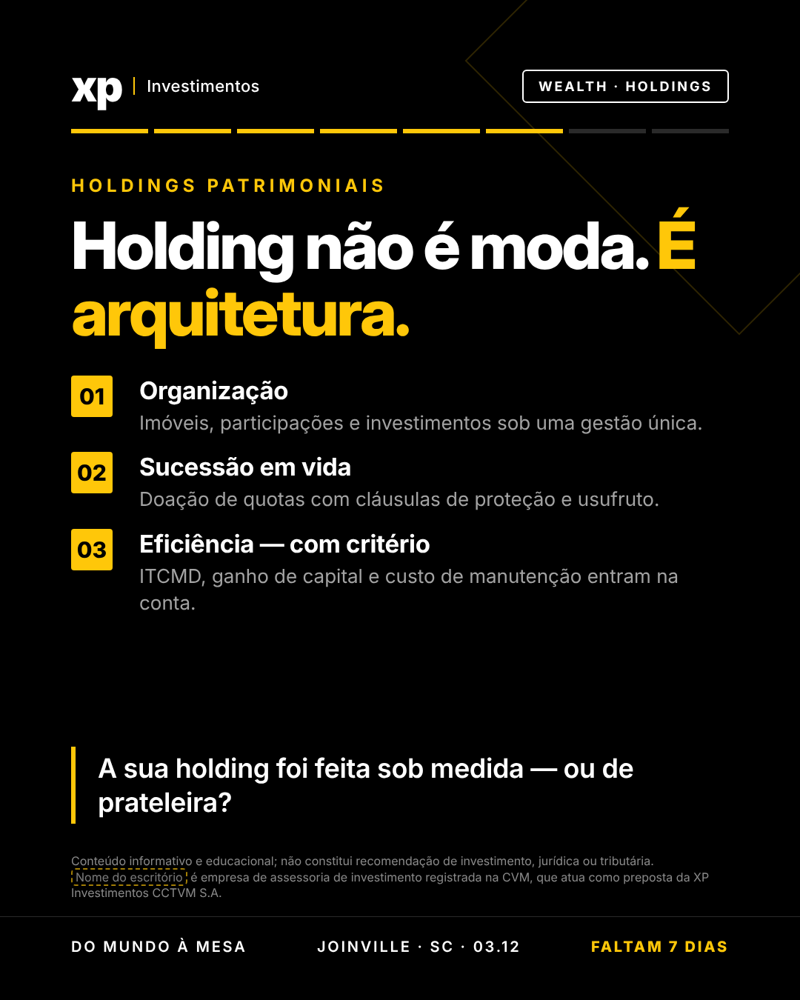
Texto do WhatsAppHolding não é moda, é arquitetura. Bem desenhada, organiza e protege o patrimônio. Feita de prateleira, pode custar caro. No jantar, vamos compartilhar casos reais, sempre preservando a confidencialidade.
Quem estará à mesa
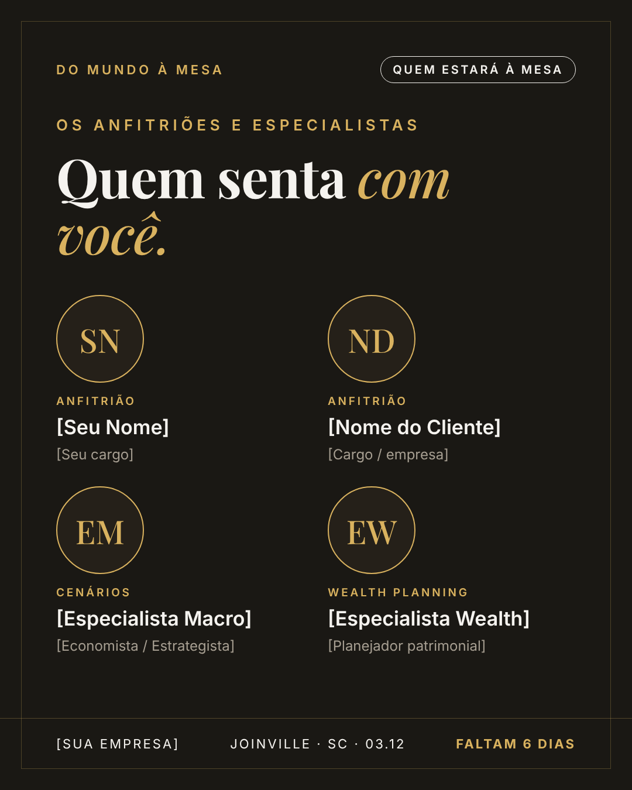
Texto do WhatsAppQuero apresentar quem estará com a gente no dia 3: o Glaucio Gonçalves e eu como anfitriões, e dois convidados especiais escolhidos para os temas da noite. Nos próximos dias, apresento cada um deles.
30/11 · seg · 8h30
10 / 15
Economista: André Torres
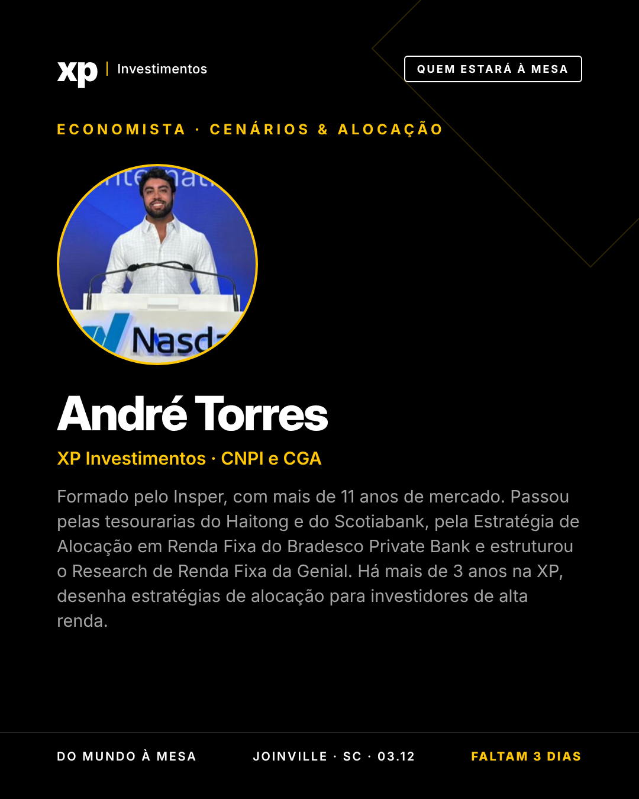
Texto do WhatsAppApresento o André Torres, economista que conduzirá a conversa sobre cenários. Formado pelo Insper, tem mais de 11 anos de mercado, com passagens pelas tesourarias do Haitong e do Scotiabank, pelo Bradesco Private Bank e pela Genial. Há mais de três anos na XP, desenha estratégias de alocação para investidores de alta renda.
30/11 · seg · 12h30
11 / 15
Ecossistema XP 360°
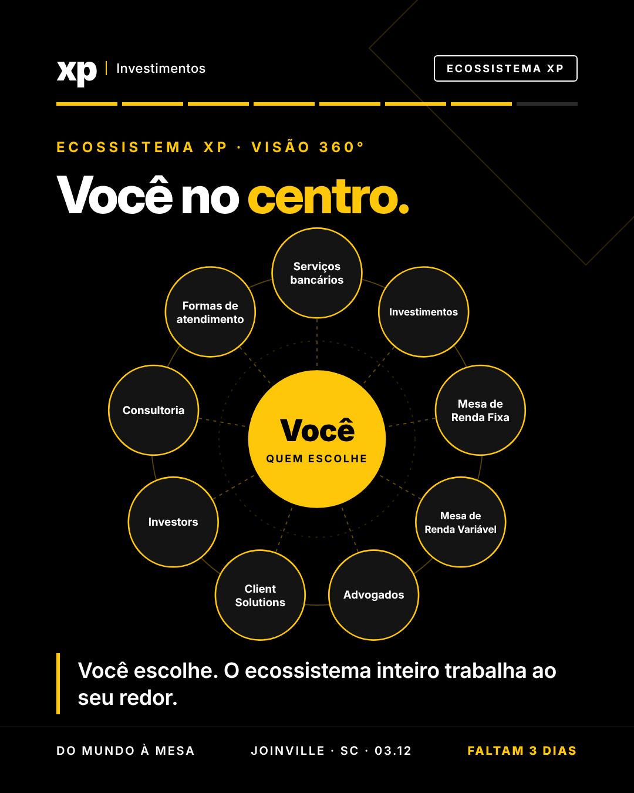
Texto do WhatsAppPara fechar a noite, o ecossistema XP: você no centro e, ao seu redor, serviços bancários, investimentos, mesas de renda fixa e renda variável, advogados, client solutions, investors, consultoria e diferentes formas de atendimento. Quem escolhe o caminho é você. O ecossistema inteiro trabalha para executar.
01/12 · ter · 8h30
12 / 15
Advogada: Isabella Magalhães
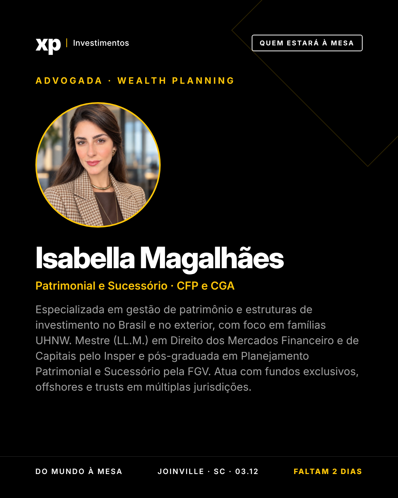
Texto do WhatsAppE apresento a Isabella Magalhães, advogada que conduzirá a conversa de wealth planning. Dedica a carreira a patrimônio e estruturas de investimento de famílias de alta renda, no Brasil e no exterior. É mestre pelo Insper, pós-graduada em Planejamento Patrimonial e Sucessório pela FGV e certificada CFP. Sucessão, offshore e holdings fazem parte do seu dia a dia.
Véspera
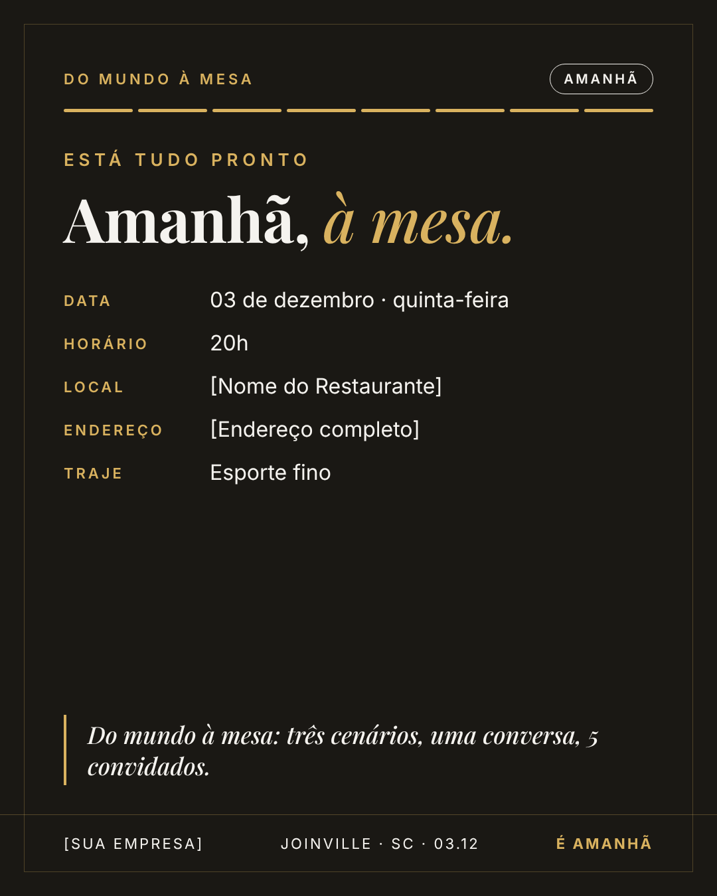
Texto do WhatsAppAmanhã é o nosso jantar! Nos encontramos às 20h no Santa Mistura, na R. Otto Boehm, 722, América, Joinville. Localização: https://maps.google.com/?q=Santa+Mistura+R.+Otto+Boehm+722+Joinville Posso confirmar a sua presença?
É hoje
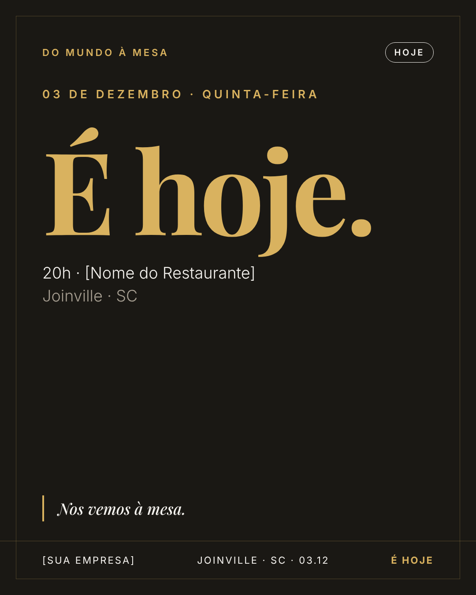
Texto do WhatsAppÉ hoje! Às 20h, no Santa Mistura. Nos vemos à mesa.
Obrigado
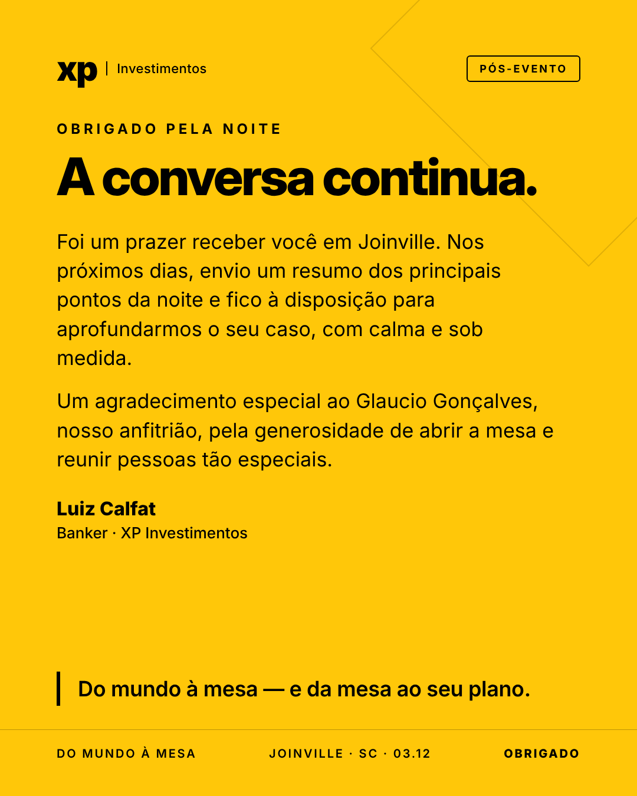
Texto do WhatsAppMuito obrigado pela presença ontem, foi um prazer receber você. Nos próximos dias, envio um resumo dos principais pontos da noite. Que tal reservarmos 30 minutos para olharmos o seu caso com calma?